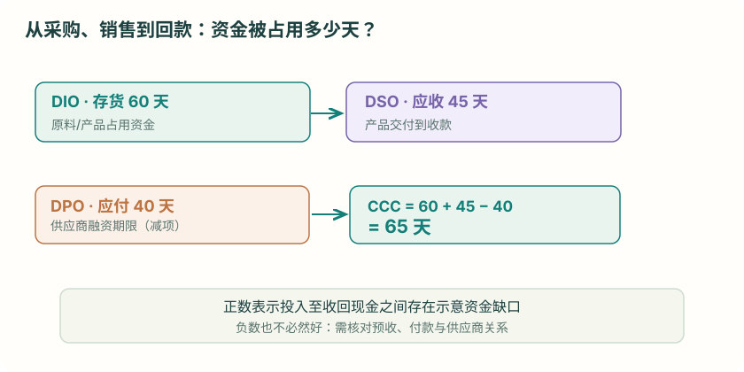
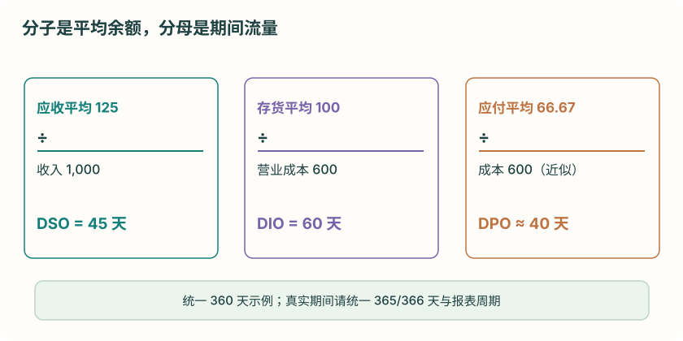

营运效率：从周转率到现金转换周期
销售一笔货可能马上计入收入，却要几个月才能收回现金。把存货、应收和应付都换成“天数”，可以看清现金占用的业务链条。
为什么收入增长后现金反而紧张？
一家制造企业往往先采购原料、组织生产，再赊销给客户并等待收款。供应商允许延期付款，可以在一段时间内缓冲现金占用。分析者要回答：货物平均在库多少天？交付之后平均多少天收款？采购成本平均多少天后支付？这些“天数”是周转指标，比简单比较年末余额更接近商业流程。

周转天数的分子分母必须匹配
为方便复算，假设一年用 360 天作为教学基准，收入 1,000 万，营业成本 600 万，平均应收账款 125 万，平均存货 100 万，平均经营应付账款约 66.67 万。由此 DSO≈45 天、DIO=60 天、DPO≈40 天。不能用期末余额直接替代平均余额却不声明近似性，也不能让成本口径和收入口径无区别地套用。

本文为示例使用 D=360；实务应统一采用实际报告天数（例如 365/366 天）或同样的 360 天基准，并且对半年度、季度报表进行相应调整。发生季节性、并购时，期初/期末简单平均可能失真，改用季度或月度平均更合理。
存货周转：快不一定是好，慢也不是必定坏
DIO 常用平均存货 / 销售成本 × 期间天数。DIO 上升可能是积压与滞销，也可能是原材料提前备货、产能扩张或交付周期拉长；DIO 极低可能意味着运营高效，也可能是安全库存不足。需要核对存货分类、跌价准备、订单交付期及产能利用率。
应收周转 DSO 增长同样有竞争性解释：客户账期变化、期末集中出货、业务重组与信用风险变化。需要配合应收账龄和期后收款进行解释，而非把每次上升都判为虚增收入。
为什么延迟付款有时改善现金，却可能损害商业模式？
DPO 用平均应付账款/采购额×期间天数更贴近实际，但没有采购额时常以营业成本近似。两者不完全相同，尤其在存货快速增加、直接材料成本占比变化或生产周期较长时。延长供应商账期可以减少当期现金占用，却可能导致信用评级下调、丧失采购折扣、影响关键供应商交付，反过来使经营风险扩大。
CCC 负值并不必然说明企业无风险：某些订阅或预付业务确实能先收款、后交付，但仍有履约责任与退款义务。相反大型制造商在扩张期的正 CCC，也可能是商业模式所致，不能直接判为效率差。
现金转换周期：调一个环节看系统变化
修改数据，即时复算
数据为教学虚构。请保持各项数据的币种、口径与时间范围一致。
把平均应收 125 改成 100，其余保持不变：DSO 从 45 降至 36，CCC 将从约 65 降至 56 天。这并不自动告诉你可回收现金增加多少，因为收入与采购时序还可能改变。
用现金和成本核实“效率”
做趋势分析时，应同时比较收入增长、平均周转天数、经营现金流、折扣政策、客户/供应商信用条款和存货减值。需要区分指标改善是经营改善、交易条款变化还是费用/科目重分类。建议复算每个分子的期初、期末余额及合并范围变化。
自测：DSO=45、DIO=60、DPO=40，CCC多少？
CCC = 45 + 60 − 40 = 65 天。如果 DSO 缩短 9 天且其他条件不变，新 CCC 为 56 天。这只是模型的数学变化，仍要调查缩短天数是否来自真实回款改善。
结论：周转天数有助于建立现金占用的因果线索，但必须同时间、口径、行业和客户支付事实一起解释。
来源与适用边界
所有计算和案例均为教学虚构。不同企业、行业和准则下的比率与科目可能具有不同定义，真实研究应以原始报表和附注为准。